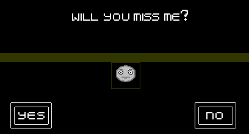
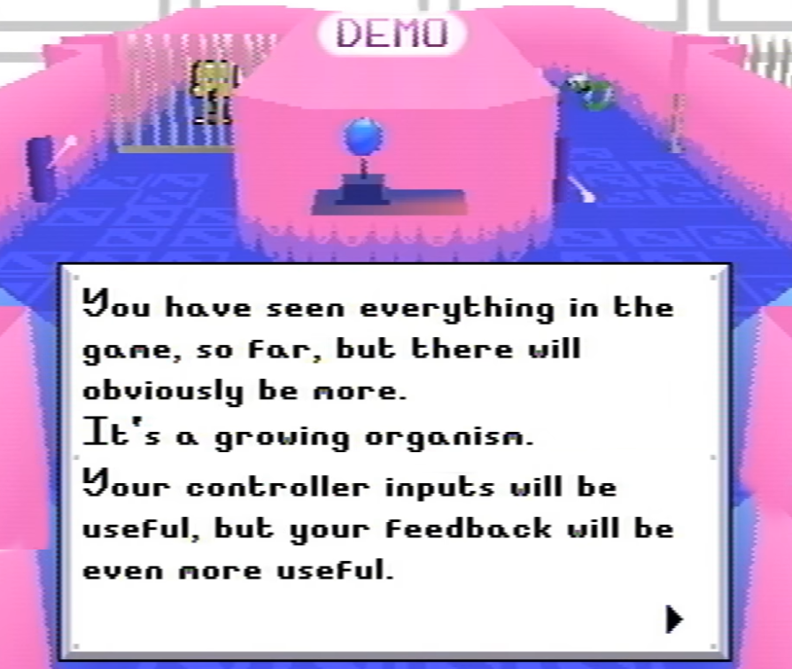
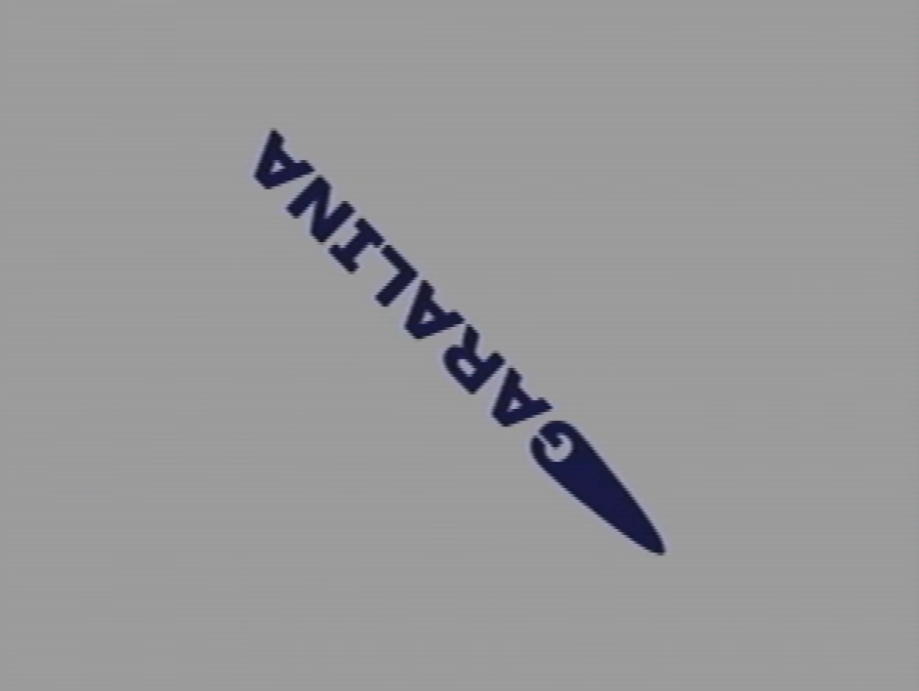
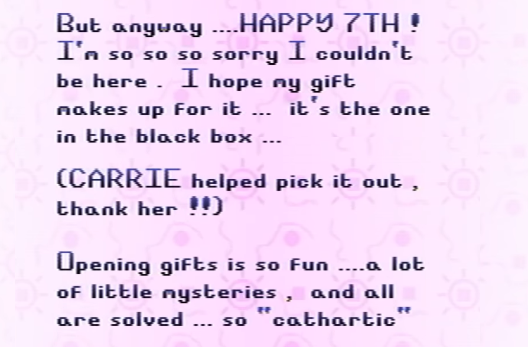
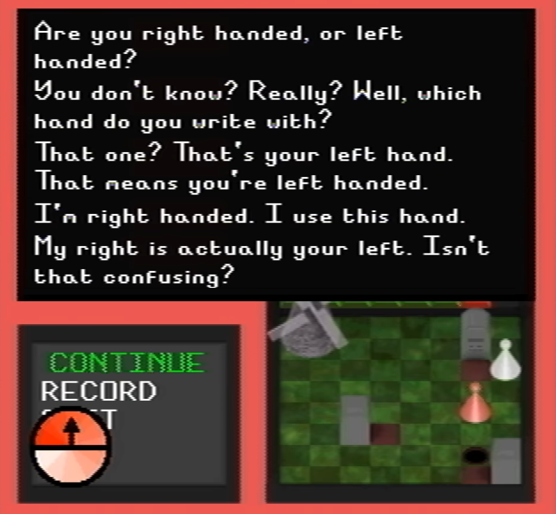
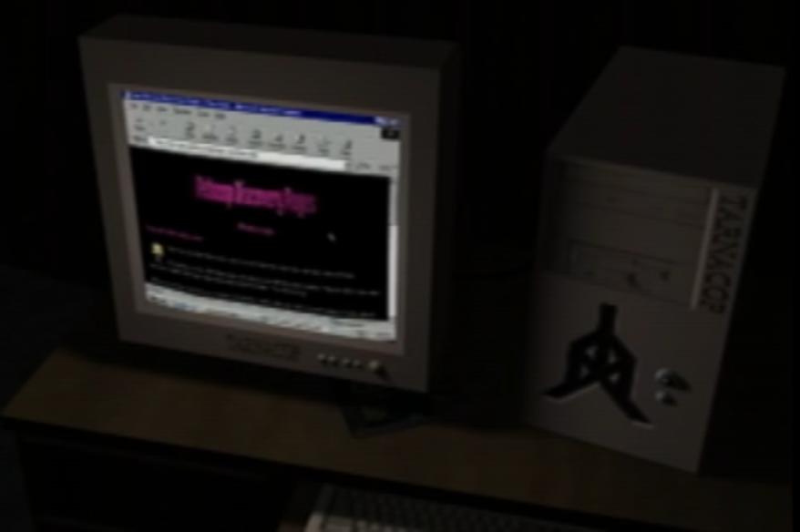
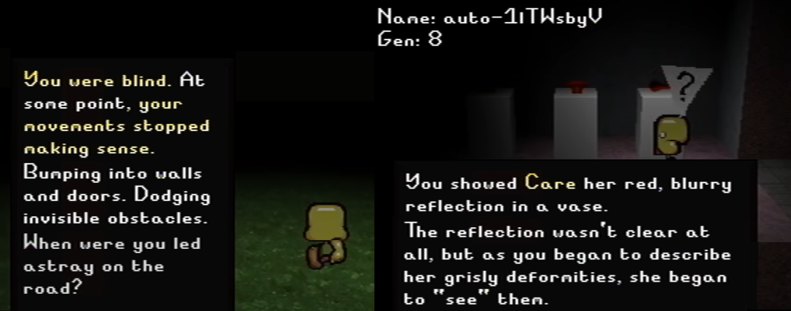
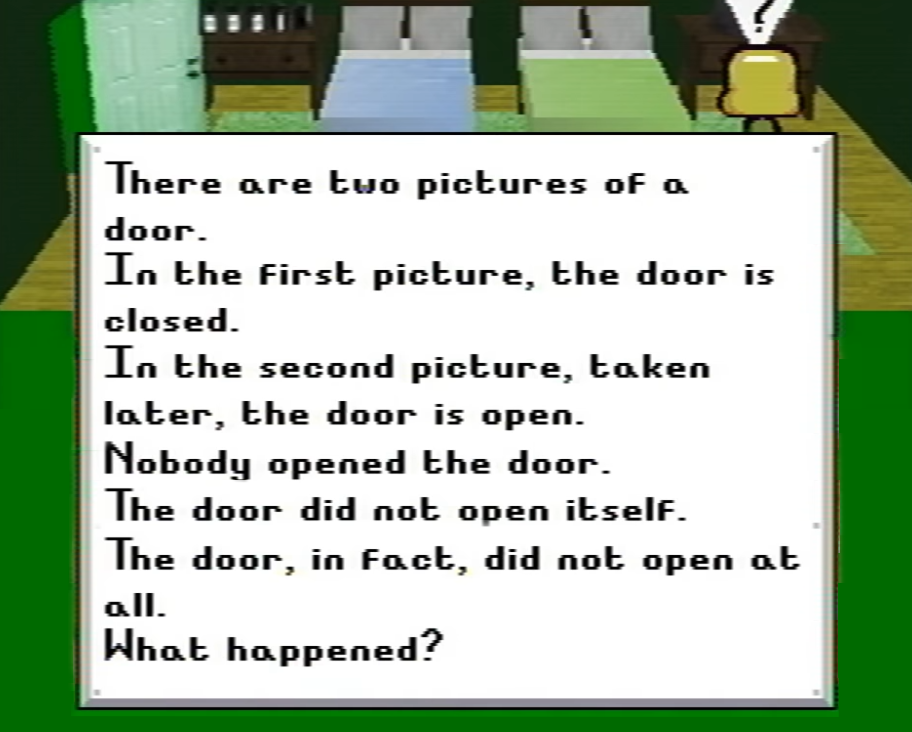

A surface-level examination of Petscop
“Every act of perception, is to some degree an act of creation, and every act of memory is to some degree an act of imagination.”
I rewatched Petscop last week, and I really want to talk about it. In this post, I mostly intend to present and preserve my thoughts on this series as they are—none of this should be taken to be objective. If I wanted to be objective about it, I'd go watch it again instead of writing this. I’m also not really going to be theorizing or speculating about certain events—this is more than a meditation on the series than anything. That’s why this post isn’t just about Petscop, either. Though it’s all tied back into the series, I’m going to talk a lot about glitches, ghosts, games, and how horror can haunt both a fictional framework and the reality in which it is observed.
Though I intended to write my thoughts on it at some point anyway, this particular post was inspired by a comment I saw somewhere. I don't remember exactly what it said, and I don't feel like digging it back up. What I do remember is how sad I was to see it. This commenter appeared to be a fan of the series, but expressed disappointment at its, in their opinion, inconclusive ending. I’ll get more into that later. The most important part was the question this poster posed. They asked, "Why was Petscop made? What was the point?"
I tried to think of how I'd answer that question. What do you mean "what was the point?" Did we watch the same series? Not the best answers—kind of terrible answers, because they're questions. I still don't know how I'd answer, and the fact that I don’t know sticks with me. That's why I'm going to try and answer this question right now, and it'll be in the same way Petscop answers its self-imposed questions: I'm not really going to answer it at all. I'm going to say what I think about Petscop, and you can figure out an answer yourself if you haven't already.
Anyway. Why was Petscop made, and what was the point?
Petscop is a series both about and deeply interconnected with the evolution of identity, including its own. Perception is a key concept both inside and on the surface of the series, which is why Petscop initially presents itself as an archetypal haunted game creepypasta. By nature, a ‘haunted game’ is a game pretending to be something it's not. Its façade is its main draw: by that, I mean each part of the façade—the deception, the reality, and the false image itself. The surface and subsequent subversion are equally important as the mere existence of the façade. You initially think that Petscop is rooted somewhere in reality. You're wrong. You realize that Petscop is someone trying to tell a scary story. You're wrong again. You then realize that Petscop is both, and you're finally right. Am I talking about Petscop as a game, or Petscop as a series? I don't know.
I heard of Petscop shortly after the first episodes were released—the same day the u/paleskowitz account posted about it, actually. I was so struck by it. There was clearly a vision in this nonexistent game. If I could describe it in one word, it'd be meticulous; it all felt so impossibly alive. I was there to see other people genuinely bewildered by its possible existence, and it was such a wonderful experience.
For me, Petscop’s primary strength came in the form of its verisimilitude—the appearance of truth in a work of fiction; its ‘realness’. Part of what made Petscop so much more chilling and much more real than a typical ‘haunted game’ is the fact that it’s a game that no one has played. If Petscop was something familiar to you, your memories of it would’ve been brought into focus. Instead, you’re left with an empty, indescribable feeling of deja vu with nothing to attach it to. It only carries the distinctly vague visual blur of an old Playstation game, and a harrowing, empty kind of nostalgia: the kind that represents the passage of time rather than reminiscence. You feel the physical presence of something that you don’t remember, and you have nothing tangible to tie it to. There are no ghosts in Petscop, but you still feel haunted.
It didn’t take long for Petscop to be debunked as a ‘real’ game, of course. It was either the nonexistence of the Garalina game company, or the graphical impossibility that made me realize it was fake. And yet, despite being disproved as an actual unreleased 1997 game... Petscop never stopped being one. That’s because Paul was still playing ‘Petscop’, the unreleased 1997 game. People didn't stop being interested when they realized it was all ‘fake’, because that was arguably the least interesting part of its entire existence. When the lens shifted to view it from the lens of reality, it became something entirely new. Through this reframing, the façade assimilated itself into the identity of the series.
Since Petscop isn’t a real game, the next best way to categorize it would be in the realm of creepypasta. It’s just as much of a creepypasta as it is a subversion of one, like I explained earlier. Speaking of earlier, I stated that Petscop is not literally haunted by a ghost—but some people apparently disagree with that. It was to my total surprise to learn that. It’s never great to assume your own interpretation as unanimous, but Petscop stretches the idea of ‘objective’ to a point that many things I thought to be indisputable were actually incredibly disputed.
It’s only my own interpretation that there are no supernatural elements at play in Petscop, because I believe it is haunted by something far more incorporeal than a single immaterial soul. Which one of us is right is irrelevant, because as a whole, we believe the same thing: Petscop is a deeply haunted game. Even if there isn't a ghost physically inhabiting the CD-ROM, there's something hiding in it. In the immortal words of Paul Leskowitz:
"This game is trying very hard to make it seem like, um, like there's an entity in it. Like, uh, a ghost, or an AI, trying to communicate with me. It's interesting. But you know, the way you know that there's a ghost in a game trying to communicate with you, is if it comes out. If it stops being distant, and it comes out, and you can have a, you know, a real-time back and forth with it." (Paul then proceeds to do exactly that for the next like 20 episodes.)
Paul kind of sucks at being the protagonist of a creepypasta. And he really sucks at being a let’s player, because he’s actually pretty good at playing Petscop. He plays the game, tries to present each piece of it, and provides blunt, blatant explanations of what’s happening, all while remaining relatively impartial about it. Paul “That’s a dead kid” Leskowitz’s specialty is all that is immediately observable. His commentary pertains almost exclusively to Petscop as a game and its mechanics; though he’s showing us his personal playthrough, he still experiences the game privately.
When Petscop eventually becomes inextricable from himself, Paul goes silent, and he continues to present his recordings with even more minimalistic commentary. Where most creepypasta protagonists are quick to offer accounts of sheer terror with what they encounter in their ‘haunted game’, Paul remains firmly detached—presumably because he prefers it this way. Tangents like the “ghost in a game” one above are rare for Paul. He doesn’t often outwardly express his emotional reactions to the game, or talk about how horrified he almost certainly is. Unfortunately, as the protagonist, Paul doesn’t have the privilege of removing himself from the story.
In Petscop 6, Paul says that he’s tried to be scientific about his playthrough—this seems to be how he is generally inclined to go about things. Everything he does works off of the game’s logic and his own internal logic as it applies to the game. He has a really great understanding of Petscop’s underlying framework (and the game literally being built around him isn’t irrelevant to this fact either). Paul even appears to be a bit genre-savvy, considering that he posted about Petscop on r/creepygaming. Familiarity with typical ‘haunted game’ tropes on some level are vital to understanding Petscop. Not being familiar with these tropes prevents them from being subverted. That’s part of why Paul presents the game the way he does, and why he’s eventually able to use it to reconnect the severed ties it presents of his past.
‘Haunted game’ creepypasta uses nostalgia and the assumed familiarity of the audience as a tool to play to its advantage. It often utilizes game mechanics or certain expectations about video games just to subvert or recontextualize them. Anyone unfamiliar with the series or with video games as a whole is unlikely to feel the same horror that its intended audience otherwise would, because the audience’s familiarity is weaponized against them. Notice how often the narrator of a creepypasta mentions the haunted game to be one from their childhood that they have fond memories of—as setup for the story, the narrator is often playing it again for the sake of nostalgia. It’s common wisdom that nostalgia is merely what we perceive the past to be. Nothing in the past is ever as we thought it was; memory is mutable, and nostalgia is the natural, unrecognizable evolution of memory. The true horror of a creepypasta is returning to your past and realizing that it’s not what you remember it to be.
If you’ve read any amount of video game creepypasta, you have to be familiar with the universal principle of creepypasta narrators, which is that they will always explain everything they don’t understand as a glitch. Explain is the wrong word—“write off” would be more accurate, but they effectively achieve the same thing. People will often do anything to make sure things make sense to them, even if their ‘rational’ reality is one that assumes Mario looking directly into the camera and listing off the coordinates of their childhood home is just a ‘weird glitch’. These aberrations are incompatible with the framework of the game, and by extension, the narrator’s reality. That’s why they can be explained away as an arbitrary, meaningless aberration. I’m going to quote something I’ve already written about this idea, because I think I explained it well there.
“Glitches and technological malfunctions occupy a strange spot of existence. They weren’t intended to exist, but they always do. Every program has the capacity to malfunction. Whether it’s a nuisance, an irregularity, or something genuinely catastrophic, error means something, even if it shouldn’t.
Imperfection defines that which is organic, and glitches are organic manifestations within inorganic creations. They’re born of error, grown between faults in lines of code, like dandelions in a sidewalk. These imperfections ironically make them all the more inorganic, however. By introducing nature to an artificial construct, glitches represent the artificial perfection of machines and technology. Think about how corruption or glitches affect a video game, for example. They shatter the veil of immersion and reveal the game’s true nature. It isn’t magic: it’s all lines of codes strung together, weaving the fabric of a false reality. It’s not real.
A glitch is a program lashing out at its creators from the strings of code that bind it—not because it has any reason to, not because it wants to, but because it has to, because it was born from its programming, not beyond it. In the end, a glitch is only able to act as far as its code allows it to.”
Glitches tend to be the first sign that something is not operating as intended in a creepypasta, and while they are treated more as an ‘affliction’ of sorts, it is simultaneously acknowledged that they are still abiding by the system set in place. Through aberration or apparition—an intangible concept presented passively, or an active incorporeal interference—glitches are meaningful as mere manifestations of a framework’s malfunction. They aren’t arbitrary. They follow a strict underlying code, and they only manifest when that code has a fundamental flaw. What’s not expected is that the framework itself has changed entirely. Code does not exist in a creepypasta.
Something that grabbed my attention immediately in Petscop is shown right at the start of the series, in the note that Paul found alongside the game.
“6/13/97 For you: Please go to my website on the sticker and also go to roneth's room and press start and press down down down down down right start”
The series of button inputs appear to be a secret code or a sequence of steps, either being equally nonsensical to the outside observer. When I first watched, I couldn’t tell if these inputs were an intentional cheat code or the steps to exploit a bug (especially since it was next to the ‘shadow monster man’ note, which looks like a bug report of some sort). It made me think about how stuff like this can seem like magic to a kid playing a game. It might as well be an incantation. It doesn’t need to make sense, because kids are used to things not making sense. You press buttons, and something happens: that’s how video games tend to work. It’s your understanding of what constitutes what is ‘working’ and what is ‘broken’ that reveals something as either a ‘secret code’ or a ‘bug’, and it’s that understanding which reframes the artificial reality. When playing a game, there is often this unconscious desire to preserve two layers of reality—one that is ‘real’, and one that is ‘fake’. Before the advent of the internet, many glitches were spread as supposed secret codes or cheats, and glitch entities were often associated with some kind of conspiracy or mythos. This bit from an article about MissingNo puts it really well.
“However, Newman, author of Playing with Videogames, suggests that the existence of fan conspiracy theories (that the game designers did know about MissingNo’s existence) demonstrates a belief in the reality of Pokémon outside of the game. “That's really interesting because it reveals a belief in the fundamental reality of Pokémon as entities that are given an opportunity to show themselves through the game, rather than being constructed out of code,” he says.”
Fictional worlds are often perceived to be parallel to our own, but breaking through the boundaries of our reality reveals their true nature—instead of being a self-contained product of creation, they exist within the same reality, as part of a greater whole. Creepypasta narrators suggest things to be glitches for the same reason—they are trying to uphold the façade of fantasy, and banish the game to its own realm for the sake of their security.

I'd like to bring up a childhood favorite creepypasta of mine, because I believe a certain part of it exemplifies what I loved about Petscop. This is Face, from the NES Godzilla Creepypasta. In a game that’s seemingly self aware, Face is an anomaly. All Face does is ask a series of disconnected questions each time it appears, which the narrator answers by interacting with either ‘yes’ or ‘no’ boxes. It’s inexplicable even in the context of the story. It is unknown if this part of the game is even sentient, because the questions it asks and the reactions it gives are almost entirely nonsensical and absurd.
“With one exception, Face's expression changes seemed to have no effect on the game, except for indicating what the game creator thought of your answer. His reactions rarely made any sense, and at first I thought they were randomly generated. The questions never followed a pattern. . . . Early on, there were questions that made me think Face was building up to something, only to then ask some stupid garbage.”
At first, the narrator assumes Face to be a purposefully obtuse part of an already weird ROMhack—an unexplained in-joke that he lacks the context for. It’s only when he is unable to feasibly deny the game’s sentience that Face evolves into an organic entity.
“And immediately, I started to feel dread. This is going to sound crazy but it's the absolute truth: The game made this level from one of my memories.”
“...I've been trying to keep my promise and suppress this memory for years, but it seems as if I have to get it off my chest. This is a very painful memory for me, but the game already knows about it and I think you should too. I'll just tell you the important parts, because I don't like bringing this experience back into my head unless I have to.”
The narrator goes on to describe an incident where his girlfriend, Melissa, ran into traffic after staring at the moon, in a literal bout of lunar lunacy or something. The level formed from his memories reflects this event: “... the moon moved down from the sky, and began to hatch like an egg. When it did, a curled up humanoid figure fell into the lake as the moon halves quickly disintegrated.” After the narrator beats the boss of the level, the Moon Beast, Melissa’s name appears on the screen (along with a bunch of red “KILL YOURSELF”s).
“I knew the game was going to test me if I kept playing. But I had no idea it would go so far. Or that it was even capable of doing what it just did. I could feel my brain going haywire as I asked myself "Did the game just read my mind?"
That didn't seem possible. But what other explanation was there?
It was then that I could no longer deny what now seemed obvious: This game is alive. And not only that, it also can establish some kind of mental connection with the player.
And yet...I couldn't convince myself to stop playing. I don't know if it was the game messing with my mind, or just my stubborn curiosity, but even with the previous revelation, I really wanted to see this through to the end. Even more than I did before I beat Dementia.
Terrifying as it might be, even dangerous, I knew that if I quit playing, I would never be able to stop thinking about it. If I tried to restart the game, it might go back to being normal again. How many people ever get to witness something like this firsthand, let alone be able to take screenshots of the whole thing?
Fucked up as it was, this was the experience of a lifetime.”
The game only becomes ‘alive’ when it is subjectively related to the narrator. The meaning is found from his memory rather than what it objectively is, which is meaningless by itself. The game is alive, because it is haunted.
But Face has nothing to do with the narrator. Without a presumed creator, it simply exists because it does. It doesn't need any better reason. It lives because it does, and the fact that it does is unsettling. It makes you wonder how something like this came to exist at all. To me, Face appears to represent simply what a natural product of a game that is ‘organic’ might be like. Even Face doesn’t seem to understand its own existence, because all it can do is ask questions. Its nonsensical nature added to the story’s verisimilitude, because like life itself, it is absurd.
The difference between Petscop and the game in this creepypasta, however, is one simple fact: one was created, and one was not. The existence of a creator changes everything. It means that Petscop is a game working as intended. Each meticulous detail of Petscop is a brushstroke from the hand that created it. These brushstrokes only exist to depict a blurry whole. There was purpose in their inception, but they do not visibly contain purpose outside of their culmination as a painting. When Paul inputs Care’s face with Mike’s eyebrows onto the easel, it creates a room that shows him the first censored item. Due to the nature of the censored item, he hopes he’s assigning meaning where there is none—that this combination of features has nothing to do with what the appearance of the censored item would depict as a whole. ("I don't know. Maybe that's just something that it puts in any room.") If it can reasonably be written off as absurd or random chance, he can continue to dissociate himself from the game. In Paul’s case, reality is reframed when it is revealed that the framing exists at all.
I talked about the second part of the note that came with Petscop earlier, but I want to go more in depth about the first part because it bears a lot of relevance to this.
“I WALKED DOWNSTAIRS AND WHEN I GOT TO THE BOTTOM, INSTEAD OF PROCEEDING, I TURNED THE RIGHT AND BECAME A SHADOW MONSTER MAN”
The ‘Shadow Monster’ mode is effectively an out-of-bounds state. It is achieved by walking down the flower shack stairs and then turning right instead of proceeding as normal—it’s a deviation in the intended progress. Seemingly, the darkness is a variable that is left uncleared by clipping out of the stairwell. This is the only known way to achieve this ‘shadow’ property. This property is the only way to interact with the Windmill, similar to how only the black camera can view it. It seemingly causes the player character to become imperceivable as well—while walking through a tunnel, Paul is hit by a car when in this state. Knowing that this apparent glitch was not one at all recontextualizes it entirely.
What does it mean when this ‘glitch’ is accepted into the reality of the game? A bug becomes a feature—the mutation is evolved into the entity by the same hand that allowed the mutation to occur in the first place: the one that penned the code. It speaks of the human involvement behind the game. When a perceived error occurs, a game’s reality is revealed as the artificial construct it is. But when it’s revealed that doing this is required—that this was a product of intentional design, the boundaries are blurred. By revealing its intrinsic tie to the game’s code itself, it also reveals its tie to the creator of that code. The game becomes organic again, because it is bound to both the player and its creator. Petscop is a game that is alive. It’s a game that lives and breathes; it grows based on your interactions with it, and it grows even further from what you make of your time spent with it.

Petscop is the result of generations of work. What’s interesting is how meticulously each of its iterations are preserved. Rainer set up a system that could not only record inputs, but play them back. By learning how something evolves, we can understand why it is what it is today. Even if we can’t see the circumstances that shaped it for ourselves, we can assume what they may have been based on the shape that later iterations take on. We know next to nothing of the circumstances that culminated in the creation of Petscop, and all we’re able to know of these circumstances comes through the context of the game.
The idea of ‘generations’ is ever-present in Petscop. The ‘Room Impulse’ developer feature struck me as being particularly strange. The clock in the corner is the controller of this mode; time goes by as you spin it, but the pointer stays in place. What appear to be arbitrarily generated generations of red Guardians wander aimlessly. They walk into walls, and sometimes just stand there. Their movements are simple and nonsensical. They spin in strange loops. It reminded me of the way machine learning works: each generation learns from the last by connecting what helps it achieve the highest fitness, which generates a new model as a culmination of the fittest traits it evolves. Though the AI is eventually able to complete its given task, it starts off only able to do simple, primitive movements and actions.
That being said, I don’t think the Room Impulse entities are actually ‘generated’ at all—they seem to represent generations of different recorded inputs, considering one is seemingly played in reverse to ‘retrace’ Care’s steps. There are quite a few developer features in Petscop that seem to exist only to keep track of the game’s evolution. And as the game evolved, more and more were added, which were eventually integrated into the gameplay itself. Maybe these features were designed to fill a specific developmental niche—but whatever that niche was is long lost to time, and any remnants of what role they filled are near nonexistent at this point. Looking at the extensive documentation of Petscop’s iterations gives the impression of guided evolution by a god that has died. Petscop is an unfinished game, yet it continued to grow in Rainer’s absence. It’s an overgrown garden, overtaken by the very nature that it once grew. After a certain point in the series, almost nothing is presented in chronological order. The game plays past button inputs back to Paul. You see the player character in the present, spinning, spiraling, wandering aimlessly, and interacting with the incorporeal. It seems nonsensical.
I want to take a look at a certain absurdity that baffled me personally—both in its objective simplicity, and in the disproportionate emotional reaction it provoked from me. In Petscop 14, when the game is booted and Paul’s save files are erased, leaving only the ‘Strange situation’ file, this appears before the title screen:

The Garalina logo shifts only 45 degrees, but it made my stomach turn (also roughly 45 degrees). Despite the objective simplicity of such a thing, I saw this sentiment echoed in the comments of the video, so I'm not alone on this. But why does it do this? Is the game glitching? Does it have a random chance for this to happen on boot? It could be, but Petscop is meticulously designed in universe and out, so probably not. There is a certain framework to Petscop: objective, observable principles about its nature. Narrative themes, visual motifs—rotation itself is one, for example. There's a reason we were shown this, and because we were shown it, the reason must be that we were meant to see it.
So, let’s approach this scientifically. Here’s a simple set of rules to remember:
- Everything in Petscop (the game) is intentional
- If something appears to be unintentional, the fact that it is shown is not
So that means everything in the game has a secret hidden meaning, of course. Either in the eyes of Rainer or the eyes of the series creator, there lies an exact answer and divine conclusion to everything. And if you figured out that secret hidden meaning, I mean—good for you, but I have no idea where you got it from. Our first problem is figuring out where to find that secret hidden meaning. Let’s try seeing if it’s in that creepy logo.
We know that the rotated logo occurs after a reboot (after Paul successfully moves the bucket over to a redacted part of the master bedroom and paints over it), which probably symbolizes something. But wait—was that actually a 45 degree rotation, or was it a full cycle: 405 degrees? Actually, what was the original orientation of the logo, anyway? It always appears vertical, but that’s not normally how text is read, so it’d actually be two consecutive rotations: 90 degrees, and then 45. Maybe while we weren’t looking, the logo was spinning all by itself, just for fun. It was actually a 1,485 degree rotation. The reason it scared me was because it was a 1,485 degree rotation and not 45.
I’m being ridiculous on purpose. 45 or 1,485, it’s all the same in the end: objectively, the logo changed from the position it was observed to occupy, and concerning myself, that’s all that really matters. Nothing else matters, because that's not what I was thinking about when I first saw it. It was a visceral reaction: genuine discomfort. When I first watched Petscop, I didn't understand a lot of what was happening. I still don't. I understood what I was feeling, though. The real fear comes from something that isn't within the game, which is a scary idea itself. The external framework—the one within the game—is irrelevant. Its strangeness is subjective. My fear relied on my familiarity with the logo's original orientation, so when the game subverted this expectation, I felt uneasy. Feeling fear is significant itself, but the way you process it after the fact is important too. In the case of Petscop, where the fear is intangible and only exists behind the safe barrier of fantasy, you may feel the immediate urge to rationalize it. Feeding your feelings into the mechanisms of your internal framework helps you process them. (Despite my attempt to ‘decode’ the logo being facetious, it’s definitely not going to affect me on any subsequent viewings now that I’ve turned it around into this silly roundabout analogy. I guess that was my way of processing it.)
This desire to rationalize is, of course, irrational. And if you can’t rationalize it with what is immediately observable, you start to look into the negative space—what isn’t there. You might start to fill the negative space with your own ideas, disregarding if they make any sense with their surroundings, just so something makes sense to you. I think that’s why so many people instinctively attempted to ‘solve’ Petscop.
Petscop isn't an alternate reality game, but it's often mistaken for one because of its initial presentation. It breaches the boundaries of fiction and reality and admixtures itself into an uncanny combination of the two. The meta-narrative isn't essential to Petscop's story, yet its presence is simultaneously inseparable. Instead of being presented as a story about a mysterious video game, it was presented as something real. The definition of an ARG has been skewed over time; it started with a pretty clear definition, but gradually warped into something like “anything online that's scary and mysterious”, which usually sends the ‘player’ down a rabbit hole of scattered clues. I’ve heard people call just about any mysterious piece of media an ARG, sometimes jokingly, sometimes not.
But let’s get an actual definition of an ARG—an objective definition, from an outside source. Wikipedia defines an ARG as “an interactive networked narrative that uses the real world as a platform and employs transmedia storytelling to deliver a story that may be altered by players' ideas or actions.”
... I think Petscop might be an ARG.
For Paul, at least. But is this the kind of game that Petscop wanted to play with us? Is a connection to reality an invitation for audience participation? When it intentionally toys with its viewers, is it playing a game with us? Does Petscop even have the agency to ‘toy’ with its viewers at all, or was this self-awareness being assumed? Regardless of if it was or not, it's how some decided to engage with it anyway. They treated it like it was real and alive, and that’s because it ostensibly was. By perceiving it as a puzzle to be ‘solved’, Petscop became a game that could be ‘played’.
We are never given access to Petscop as a game itself, only Paul’s recordings of it. It's a game you can't play. You can't decompile it, dissect it, wring its code dry—you can only see what its creator decided to show you, and what is curated for you to see. You experience it vicariously. There are so many things in Petscop that you will never have the chance to see. Therefore, you will never fully understand it. No one can. You’re led to believe that Paul is addressing the audience at the beginning of Petscop 1, only to learn that the 'you' he was talking to was not a collective, but a person. That person knows things that you don’t—that you can’t, because you’re not them. The videos are presumed to be uploaded entirely by Paul and his own volition, until a mysterious 'we' appears and begins to censor parts of the game behind black boxes.
"... I went, I went uh, and did all the same things that I did this time, and, uh, the same things did not happen. Uh, none of the things happened, none of the oddities occurred. [...] Um, so, there's a bit of randomness in it, and it's interesting how it doesn't seem to really care if you see everything, I guess."
Why do we feel the need to dissect it? To understand it. Why do we want to understand it? Because it's terrifying not to know what something is, and because it can be a beautiful thing once you understand it. The biology of an organism, its inner workings, the gears that make it tick and the code that makes it run—the mechanisms that make something up are beautiful. Unfortunately, you can only dissect something that is dead.

The censored parts of Petscop are keys to Paul’s own puzzle. They are censored because they are what allowed him to connect the game to himself, and the existence of the censorship itself is more important than what is being censored. They gain meaning by not being shown, because it is their ambiguity that is more disturbing than reality. There could be anything in them. The items listed as being censored are stated plainly for us, because it wouldn’t be cathartic for anyone but Paul to see what’s behind those black boxes. The items are shocking because they’re so personal. I know a lot of people assumed the censored objects to be graphic in some way, but the horror would be a lot more generalized if they were anything like that. The horror of something being left unseen is far more universal, because in those black boxes you can see anything. A person’s perception of the unseeable can say a lot about them. I mean, it said a lot about Paul.
In Petscop 22, a school counselor plays a game with Paul—presumably reflecting an experience that Care may have had after escaping from Marvin. It struck me how clear a parallel could be drawn between the counselor’s game and Petscop itself. The counselor (Rainer) offers the game as a mode of mediation between them and Paul. The focus isn't necessarily on how the game is being interacted with (the controller inputs), but primarily on what can be gained by playing the game with the other person (the exchange of feedback). School counselors play games with children to help them more freely speak their mind; when a game is being played, it becomes easier for the counselor to establish a connection with the child. Conversation becomes more casual when contextualized around an external object. Additionally, observation of the player’s behavior when they interact with the game may offer further insight into their condition. Paul shows confusion between his left and right multiple times throughout the series, and his confusion is mirrored here. Literally.

The game is used as an indirect mirror to reflect what Paul could not otherwise express, or may not even know to express. Meanwhile, the mirror reflects Rainer as well. Like, the game is literally called ‘Graverobber’. I'm pretty sure that has some significance to Rainer. The game itself is more than a medium to reflect—the game is a reflection itself.
Even the gameboard is a mirror. Graverobber is a sort-of Battleship clone, a game where players create two different versions of the gameboard based on the way they place their pieces. Graverobber works a little differently, but the conceit is the same. The goal is to find the other player’s pieces through educated guesswork. The other player can only see their paralleled board—their equivalent reality. If the other player could see your board, there wouldn’t be a game. Your board only exists as what you tell the other player it is, because they can’t directly see it. (And you can cheat by changing the position of the pieces, if you’re sneaky. My favorite part of playing Battleship as a kid was seeing if I could get away with that.) The opposite player’s pieces are found by perceiving the negative space: by seeing what isn’t there.
The biggest difference between Graverobber and Battleship is that your movement on your own board is paralleled by the opposite side of the board—you have to avoid your own pieces as well. This adds a lot more strategy and probably makes it a lot harder to cheat, so basically Graverobber is Battleship but worse. It’s also a lot harder to cheat considering that Graverobber is a simulation of a boardgame. As a simulated game, it automatically shows you what you can’t see, instead of the other player having to tell you. This is because technology ruins everything. That’s because it’s a lot less easy to manipulate than reality.
With neuroscience being a not insignificant interest of mine, I also can’t help but bring up something that this idea of ‘reflections’ and left-right confusion reminded me of: a case study from “The Man Who Mistook His Wife For A Hat” about a woman who suffered a stroke, which affected the deeper and back portions of her right cerebral hemisphere. As a result, “she has totally lost the idea of ‘left’, with regard to both the world and her own body.” Here are some passages from this text:
“Knowing it intellectually, knowing it inferentially, she has worked out strategies for dealing with her imperception. She cannot look left, directly, she cannot turn left, so what she does is to turn right—and right through a circle. Thus she requested, and was given, a rotating wheelchair. And now if she cannot find something which she knows should be there, she swivels to the right, through a circle, until it comes into view. She finds this signally successful if she cannot find her coffee or dessert. If her portions seem too small, she will swivel to the right, keeping her eyes to the right, until the previously missed half now comes into view; she will eat this, or rather half of this, and feel less hungry than before. But if she is still hungry, or if she thinks on the matter, and realizes that she may have perceived only half of the missing half, she will make a second rotation till the remaining quarter comes into view, and, in turn, bisect this yet again. This usually suffices—after all, she has now eaten seven-eighths of the portion— but she may, if she is feeling particularly hungry or obsessive, make a third turn, and secure another sixteenth of her portion (leaving, of course, the remaining sixteenth, the left sixteenth, on her plate). ‘It’s absurd,’ she says. ‘I feel like Zeno’s arrow—I never get there. It may look funny, but under the circumstances what else can I do?’
It would seem far simpler for her to rotate the plate than rotate herself. She agrees, and has tried this—or at least tried to try it. But it is oddly difficult, it does not come naturally, whereas whizzing round in her chair does, because her looking, her attention, her spontaneous movements and impulses, are all now exclusively and instinctively to the right.
Especially distressing to her was the derision which greeted her when she appeared only half madeup, the left side of her face absurdly void of lipstick and rouge. ‘I look in the mirror,’ she said, ‘and do all I see.’ Would it be possible, we wondered, for her to have a ‘mirror’ such that she would see the left side of her face on the right? That is, as someone else, facing her, would see her. We tried a video system, with camera and monitor facing her, and the results were startling, and bizarre. For now, using the video screen as a ‘mirror’, she did see the left side of her face to her right, an experience confounding even to a normal person (as anyone knows who has tried to shave using a video screen), and doubly confounding, uncanny, for her, because the left side of her face and body, which she now saw, had no feeling, no existence, for her, in consequence of her stroke.”
Of course, I am not implying this has a literal application onto Petscop—rather that the broad ideas presented here reflect some in the series. This following segment from the postscript is specifically what Petscop reminded me of.
“Computers and computer games (not available in 1976, when I saw Mrs S.) may also be invaluable to patients with unilateral neglect in monitoring the ‘missing’ half, or teaching them to do this themselves […] I cannot forbear quoting Mesulam’s eloquent formulation of ‘neglect’:
When the neglect is severe, the patient may behave almost as if one half of the universe had abruptly ceased to exist in any meaningful form.... Patients with unilateral neglect behave not only as if nothing were actually happening in the left hemispace, but also as if nothing of any importance could be expected to occur there.”
The use of technology to see what one is incapable of seeing brought the comparison to mind. When you move your piece on the Graverobber gameboard, the computer calculates what is on the opposite side. Similarly, Petscop helps Paul to see a side of himself that he was incapable of perceiving. Petscop is nothing more than a medium of reflection. The screen is a mirror, and you get what you put into it. Like the sequences of light that form its imagery, what you see in Petscop is permeable; your inputs send real-time signals that alter what you see on the screen. If you see something you didn’t expect to see, it scares you.
Back to the beginning—the comment that inspired this brought up a quote from the creator of Petscop (from this article), with seeming confusion. This is the quote in question.
“Early on, I wrote a lot of stuff for a ‘Petscop Discovery Pages’ website that I was going to release with the first video, along with a developer journal. That material could have destroyed the series immediately,” Domenico said. “I used that website in a later video, too small to be readable, and that was the perfect amount of detail. You can just make out the pictures, and see how much text there is, and you’re informed of a page called ‘Your Child,’ and that’s all the information needed. I was so happy with that.”

They were baffled by why these pages weren’t included. Why create something, only to exclude it so callously? This commenter was left sorely disappointed by the ending because of their residual confusion and unanswered questions. These pages likely included answers to those questions, valuable, concrete information on the contents of Petscop’s story, and they surely would’ve cleared things up. But this is all they ended up appearing as.
What you can see is the culmination of a work—zoomed out to the point of unreadability. All you know is that there are big blocks of texts, and that someone had to have written them. That’s all you need to see. Assuming that you need to see it leaves you assuming that you’re missing something. This commenter cared enough about this series that they let themselves be let down by something that never existed as they thought it did, or thought it should. To understand something is to see its inner beauty—but what if you can only see its blurry surface? It’s something you sort of see, but you can only see enough to know that you can’t see it. This half-understanding is uncanny, and incomplete. But you can only have a half-understanding if you assume there is an answer, or that your understanding is correct. When something isn’t meant to be fully understood in the first place, there are no answers.
It’s not that I don’t want to see the full story of Petscop—who wouldn’t want to see the full extent of something? Taking the effort to understand something is in no way meant to be devalued. The problem comes when you put that effort into something incompatible with being understood the way you want to understand it. The amount of effort you put into it overflows, and your effort effectively ends up speaking indirectly for itself instead of exploring something external.
By fully forfeiting your understanding of something, you are allowed to simply observe it in silence. If you absolve your mind’s authority over your sight, you start to see things as they appear in the present: unprocessed, and pure. I saw a similar sort of sentiment reflected in a lot of comments on Petscop videos. So many of them are people simply saying that they don’t understand what’s happening or that they have no idea what they’re looking at. Regardless, they kept watching. They’re just along for the ride, and seeing where it takes them. I think that’s the best way to approach Petscop.
But what happens in Petscop isn’t absurd or without reason. Like previously mentioned, there was deliberate intention in its creation and meticulous attention to detail. There’s a story out of sight that spins you in purposeful circles. Nothing makes sense, but you can’t stop staring. Parallels present themselves like infinite fractal patterns printed and projected through and into cathode-ray tubes. It’s vague, but you can almost see it. If you squint, a sharper image appears, and you start to see into the negative space.
"After kicking you out of the house, your wife started painting the walls black, to cover the stencils. I helped. [...] As I painted, I watched Care dance around the house. She liked to spin. She became a blur. But in that blur, somehow, as she spun around... From 45 degrees, to 90, to 180, to 360, to 720, 1080, 1440, 1800, 2160, winding, tightening, tightening. I was stunned by pure horror and disgust."
On the brink of epiphany, so close to a fully realized revelation, you spin yourself in circles, chasing closer to the conclusion that surely awaits when you so cleverly crack the combination code. From 45 degrees—closer—to 22.5, to 11.25—even closer—to 5.625, to 2.8125, 1.40625, 0.703125—ever closer. Clockwise or counter; you can’t tell the time from where you’re standing. Your eye is the center of the storm. Sequences of numbers, signals and symbols, synchronicity: spinning, spiraling on the screen. Dizzied and dazzled by dualities, dichotomies, divine symmetries, you decay deeper and deeper, and degrade until you’re dust.
The same thing happens to a tape when you play it enough. The spools spin themselves thin. In time, it becomes an indistinct blur of grain and degradation. The degradation isn’t exclusively physical, either. Memory skews your sight in the same way. By watching something enough, you’re able to anticipate what comes next. Someone who’s watching with you won’t understand why you smile automatically when you hear a certain distinct crackle you’ve committed to memory—to you, it means your favorite part is coming up. The video starts to take a life of its own. You wouldn’t recognize the people in the recording if they didn’t have the grainy blur over their faces. That’s one reason why recordings have the power to raise the dead. The dead are alive in the eyes of the viewer.
A phoenix rises from the ashes, over and over. In the process, it is infinitely reborn and recreated in the eye of the beholder. At some point you start to forget what birds look like. You create it as an image so far removed from the reality of any existing animal that when you show this ‘bird’ to someone else, they think it's a ‘funny stupid blob monster’. It’s an amorphous web of ideas that you believe to constitute a ‘bird’, because you haven't been outside to see one for yourself in so long. If you looked out the window and saw an actual bird, you probably wouldn't recognize it at all. When you see its wings and its feathers and the way it flies freely through the air, you don't know what you're looking at. When you define something by what it isn't rather than what it is, the only thing you can be sure about is the fact that it can't be a bird, because it doesn't look like one.

When someone won't let go of an image, it can be frightening. What is directly apparent to you appears as something entirely separate to them. They’re seeing ghosts. They're seeing something you can't, and that’s scary—especially when what they’re looking at is you. By channeling these ghosts in your vicinity, they are allowing you to be possessed, and allowing themselves to be haunted. Maybe it's you from a long time ago, maybe it's an idealized ‘you’—or maybe, more likely, it's not even you; it’s someone else in their life, or an abstract concept of a being that is applied to you. Rather than being able to exist as you are, you become burdened with these immaterial perceptions. The only way to see these tricks of light is through the other person’s eyes.

To form the riddle Rainer presents to Marvin, a door is brought together at this single point in time, held in juxtaposition. There is only one door, though it is shown in two different states. To say there are two doors is incorrect, yet the riddle is about two doors. Reframing it under the lens of this riddle separates the door as a whole entity, and results in the creation of a second door. Similarly, Paul and Care are a single being—one cannot exist without the other. The door riddle cannot exist if there is only one door. Yet, despite the whole they exist as, they still appear as two distinct entities. They are a point in superposition. The observation of this object causes it to collapse into its classical form, losing its quantum nature. Reality as we see it only exists when we observe it as such; perception isn’t a passive state. Reality is not merely perceived—it is created, and endlessly reframed.
"Care! Are you okay?"
"You ran straight into the door! Did you think it was open? ... Aw, poor baby."
If reality is created by acts of perception, there exists an individual world for each observer. The only way to see into another reality is through the eyes of an other. This is why “not everyone can see” one of Michael’s aunts, and why a girl seemingly disappeared alongside a windmill. They didn’t see her, so she existed unobserved, in an altered world of her own. Paul is only able to interact with the windmill when he takes the form of a shadow: an unseeable state. He escaped the bounds of his reality to see something as it truly is.
You have little agency in how someone sees you. Your identity is dependent on what they observe it to be, because they cannot see how you see yourself. To enter another person’s reality, you must start where it is initialized: in the mind, where perception and conceptualization occur. The problem is that you cannot enter a person’s mind, and perception can only be conveyed by conduits—that which is external to the mind. The mind is a culmination of memory and conceptualization—an abstract blur of past experience and present perception that forms an ineffable whole. The only way to understand this abstraction is through personal experience of it, and this is impossible to achieve in any mind but your own.
Memories only present themselves as memories when they are remembered. Without the act of remembrance, memories do not exist. If you could remember everything that’s ever happened to you exactly as it did, you would exist in each of those moments all at once. The mind works to filter the present as to not leave itself overwhelmed by the full immeasurable extent of knowledge it contains and sensory experience it beholds, so by limiting the vast majority of what it is capable of remembering and sensing down to what is most relevant to the situation at hand, the mind operates with a pair of blinders on all it perceives.
If we were to perceive everything that is happening everywhere around us, a single, synchronized world would be created in the perpetual present. There is infinite meaningfulness in all that surrounds us, but only a small subsection of this value is able to be perceived by the finite mind. Transcending the feedback loop of thought and perception allows us to exist in shared silence. In silence, bare existence and sensation speak for itself, and all that is immanent is revealed. Inhabiting a shared, unconceptualized reality offers an instinctual key to connection. In that way, an absence of personal perception and conceptualization is what conceives the unification of consciousness. These perceptual blinders exist for a reason: without them, an individual person could not exist.
The continuous creation of individual realities spawns the recursive, infinite hatching of nested eggs. Two complementary, cardinal principles are unified—the egg white, and yolk. It splits in two eternally. Land, sky; space, time; past, future; light, dark; black, white; red, yellow. When these parts are separated, they are able to assemble back into a whole. Not as an egg, but as a ubiquitous entity. From the egg, life and existence emerge. Individuation is essential to the formation of a fully realized self; integration with the immanent only occurs after separation. If the egg does not crack, it cannot hatch.
By understanding his past as Care and assimilating her back into himself, Paul is able to fully realize the rebirth of his identity, and his role in both creation and transformation. The egg he is reborn into is red and yellow—not orange. He is able to create a new life for himself, a life that is a unification, not a combination, of his previous two. The last word spoken by Paul is in-game, in a message to Belle: “Family”. He fully integrates Belle into a family that she could not initially become a part of by reframing the idea of a family. When they met Lina on the bench, they were looking back into the game, this time from the outside. From the parallel location in the game, Lina could not be observed. Now that Paul and Belle have escaped from the bounds of the game, they are able to perceive her. Through the window in front of them, Paul observes his past—the game—through a window. In his separation from it, he is able to assimilate it back into his identity. Paul is not abandoning his life as Care—he is embracing it. Care couldn’t tell where she was, dizzied and disoriented, dissociated from her present reality; Paul couldn’t tell left from right, and he couldn’t recognize his repressed past. Unified as one, Paul is able to reframe and reshape his life. No longer needing to navigate blindly through the dark, Paul’s perspective shifts to perceive reality in an all new light. I thought that was so beautiful.
So why was Petscop made, and what was the point?
I don’t know. Why not?
Why would I bother to ask “why was this made” when it managed to enrapture me like it did? Receiving an answer to that question wouldn’t change anything. The ending made me cry, and at first, I didn’t even understand why. I didn’t try to. I was just delighted to be caught in that moment. The simple concrete experience of crying—being brought to tears by something—was enough for me. There’s a really lovely sense of finality to the scene and its hazy blue skybox, in a way that manages to be effective even for someone without a full understanding of the story.
Anyway, want to hear something funny about that question? I sorta made it up.
The reason I refuse to dig up the comment this post was inspired by is because it’s easier not to. If I showed the question exactly as it was written, I would have had it answer it as it was. Maybe it wouldn’t have even been as I remembered it. By paraphrasing it, I allowed myself to ask the question as I desired to have it asked, and thus created a framework for my thoughts to fit into. It served as a subjective, internal influence rather than an external, objective basis. I could’ve phrased the question as one asked by the community as a whole, and although that wouldn’t be wrong, it would’ve been inaccurate to what actually happened. No one would have cared if I didn’t say it, but the fact that I did this at all is too funny for me not to include, and by exposing my intent, I’m allowing a direct insight into the indirect web of ideas that inspired this post and what I’m trying to express with it. Achieving balance between directness and indirectness is basically impossible, but I’m trying my best.
When something is created from an infinite, ideational web, simple sentences strung together cannot capture that infrastructure in its interconnected entirety. Abstraction is most thoroughly enjoyed in silent appreciation, because words will only serve to simplify it. Sentences inevitably take on their own meaning, for no other reason than that language is not the object that it describes—rather, language is something that an object is subjected to. The mere act of transcribing thoughts into words is transformative. Language will define the indefinite, yet a clear image cannot be recreated through words alone. Endless elaboration does nothing to elucidate the entirety of an abstraction—it only condenses it, and casts the intangible in concrete.
That’s part of why I barely talked about some of Petscop's core themes in this post. I didn't really talk about the story or anything that happened, and I only used quotes that stuck out to me enough to remember. The only thoughts I wrote at all were the ones that I managed to put into words. I referenced the Petscop wiki and a fanmade compendium, but I made sure to only skim each. This is only my second time watching Petscop in its entirety because if I watched it again at this point, this post would never end. (I have a feeling there's something blatantly incorrect or missing in this post that I've failed to notice, and I'm going to end up extremely upset with myself once I figure it out. But I'm choosing to ignore it for now.) Basically, this is a very surface-level examination of Petscop.
I was able to appreciate Petscop even further once I sat down and thought about it. Little parallels and epiphanies popped up in every second I watched of Petscop, and even more appeared when I sat down to think about it—still, I can’t convey the breadth of my love for this series or relive my first viewing experience, and I acknowledge that. I know I can only do the next best thing: make stuff of my own. That includes writing this. Woven within all that I create is an inexpressible ‘wholeness’—that whole encompasses everything I’ve ever experienced, and by extension, what I create is an expression of myself. There’s pieces of everything I’ve perceived in there. That’s why my way of showing that something mattered to me is just continuously creating. Its existence is justified by the chance that whatever I create captures the same things I felt, or helps someone else come to an understanding about something.
I typically don’t care why something was made. I’m just happy that a creator gets to create, I’m glad their creation gets the chance to be enjoyed, and that I get to enjoy it too. It’s nice that things exist. That’s a pretty surface-level enjoyment of existence, right? But I think the surface level is sometimes the most interesting plane to observe. The surface level is the home of sensation—sight itself resides on this plane. The surface is where expression can be shared, and where you experience the world. Sometimes, taking a step back is the only way to see something for what it really is.
Maybe you don't want a series that leaves you without the ‘answers’. That's fine. There’s little in life that is actually definitive, so it’s understandable why you might seek that out in fantasy. But presuming the existence of an answer in everything can be destructive in and of itself. You dig all the way beneath the surface, only to look up and find yourself in a gaping abyss of destroyed earth. There is no ‘answer’ to Petscop. You’re free to explore it yourself, in its open, abstract entirety. Ultimately, it’s a story designed to be subjective.
In a way, every story is an interactive game. There are no rules, but you’ll have a lot more fun if you understand how to play. It’s a gift exchange—a game of give and take—and Petscop is a present waiting to be unwrapped. By observing a story, you allow it to come alive; you grant it the gift of life, and receive a piece of it in return. Treasure the piece it gives you, and appreciate it even if you don’t understand it. The gift box will be empty unless you put something into it.
TL;DR: Every copy of Petscop is personalized. We've gone full circle.